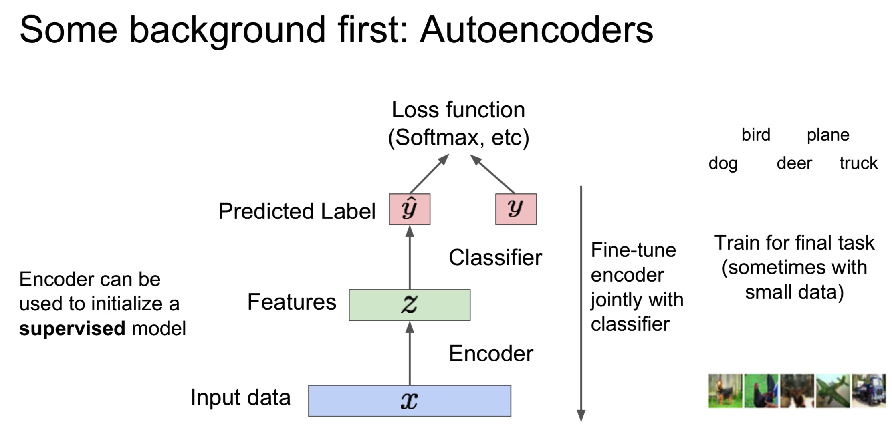

Unsupervised Learning：只有数据没有标签，我们的目标是学到一些潜在的数据中的结构，比如聚类，降维PCA，特征学习，密度估计等。
Generative Models:
给定训练数据，学得一个p-model，并用p-model生成新的数据，我们希望p-model 和 p-data 尽可能的相似。

可以分为显式密度估计和隐式密度估计。
为什么Generative Models很重要？
Generative Models的一些分类：
我们使用链式法则来分解image x的可能性，然后最大化训练数据的likelihood：
但是这个在每个pixel values上的分布非常的复杂，我们可以用神经网络来表达它。
PixelRNN:
从corner生成pixels，用RNN(LSTM)来解决之前的像素的依赖，缺点是这个序列生成太慢了。
PixelCNN:
仍然是从corner生成pixels，但与PixelRNN不同的是，这里直接使用CNN来解决之前的像素的依赖，然后最大化训练图像的似然

Variational AutoEncoder(VAE) ，它引入了一个隐变量，这不好直接优化
什么是Autoencoders?它是一个无监督学习，目标是从一堆无标签的训练数据中学到一个低维的feature representation
为什么要降维呢？因为我们想找到数据中最重要的特征。
我们训练这样的特征z 使得它能够用来重建原来的数据x，我们需要一个encoder来提取x的特征z（CNN卷积） ，然后再用一个decoder重建数据（CNN upsampling），然后将该数据与输入计算一个loss，想让这个loss尽可能小，也就是pixels 之间相差很小。
encoder可以用来初始化一个监督模型

接下来让我们走近VAE，它在autoencoders 中加入随机因子，那么我们就可以采样生成新的data。
我们假设训练数据是从不知道的表示 z 中产生的，z是一个 latent factor，可能表示 x 中的一些特征。
我们想要学到一个真实的 \(\theta^*\) 来表示这个模型，那么该如何表示这个模型呢？我们可以选择简单的 p(z) ，然后 p(x|z) 很复杂，可以用神经网路来表示。
怎么训练这个模型呢？通过最大化似然函数来学习模型的参数：
但是似然函数是 intractable的，但我们可以定义一个additional encoder network \(q_{\phi}(z|x)\) 来近似 \(p_{\theta}(z|x)\) ，这是很有用的。
然后我们就可以通过编码和解码网络来计算似然函数：
隐变量的威力真的是十分巨大了，EM算法中也同样使用的隐变量来迭代优化，不过这里可以通过采样来估计第一项的这个期望。而且最后一项恒大于等于0。
上面红线所指的那部分，我们想要最大化这个输入data的重构的似然，而绿线那部分，我们想使它尽可能小，也就是让后验和先验尽可能的相似。
训练好之后就可以开始产生新的数据了：
但是往往它的图片像素很低而且 low quality与 GAN 相比。
下面介绍 GAN(Generative Adversarial Networks):
考虑一下如果我们不显式对密度建模，而是直接采样，GAN就是基于这样的想法game-theoretic 的方法，通过2-player game学习产生训练数据分布。
但现在问题是如何从一个复杂的高维的训练分布中采样呢？我们可以先从简单的分布采样，然后学习一个 transformation 将这个简单的采样趋近于训练数据分布，需要一个神经网络来做这件事。
在GAN中有两个网络：
- Generator network：它通过产生real-looking的图片尝试欺骗 Discriminator
- Discriminator network：尝试辨别real 和 fake 图片
通过一个minimax game来训练这个两个网络:
Discriminator(\(\theta_d\) ) 输出 （0，1）概率，Discriminator(\(\theta_d\) ) 想让 D(x) 趋近于1，D(G(z))趋近于0。
Generator(\(\theta_{g}\) ) 想让 D(G(z)) 趋近于1，也就是可以让Discriminator 认为产生的 G(z) 是真的。
然后就是轮流优化：
但是在第二步训练时会有些问题，当sample是fake（趋近于0）时，梯度很平缓，很难训练，而sample的结果很好时，梯度却很大
于是我们可以这样修改
综合起来：
训练结束后，可以通过 Generator network 来产生新的图片：